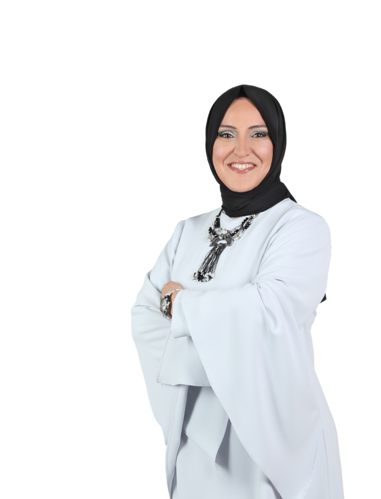

Building
Bridges to the Future
Between Türkiye & the UK.
Two countries, one mission: turning education, leadership and enterprise into opportunities that outlast us. From lecture halls and boardrooms to international stages, I build the partnerships that move people and ideas forward.

Education. Leadership.
Lasting Impact.
I am an academic, public speaker and international adviser based in London. My work sits where education, enterprise and public benefit meet, creating real pathways for students, educators and women entrepreneurs to learn, lead and grow.
I believe leadership is not only about building organisations. It is about opening doors for others, and building connections between Türkiye and the United Kingdom that last well beyond a single project.
On Stage, On Air, Across Borders.
Keynotes, panels, interviews and international programmes: a selection of the conversations where education, leadership and enterprise take the spotlight.
Speaking that moves people
Leadership, education and entrepreneurship for international audiences.
Where ideas meet decisions
Academic and business panels across Türkiye and the UK.
Stories behind the work
Conversations on women's leadership and building across cultures.
Have an idea worth taking further?
For speaking invitations, partnerships and international collaborations, let's start the conversation.